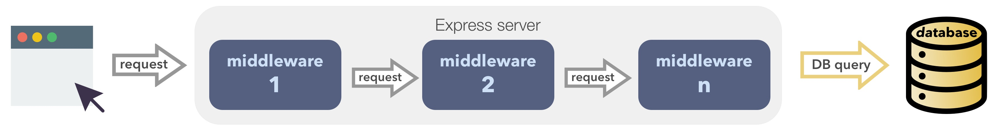

훅 미들웨어
리눅스 파이프
파이프는 도구상자 철학을 만든 리눅스의 가장 강력한 기능 중 하나입니다. 파이프라인은 서로 연결된 일련의 프로세스이므로 각 프로세스의 출력이 다음 프로세스의 입력으로 직접 입력됩니다.
예를 들어, 현재 디렉토리의 파일을 출력하고 (ls), 문자열 "key"가 포합된 ls 출력 행만 보존하고 (grep), 스크롤 페이지에서 결과를 보려면(less), 사용자는 터미널에서 아래와 같이 입력하면 됩니다.
ls -l | grep key | less
Express 미들웨어
파이프의 중심에는 Chain of Responsibility (CoR) 디자인 패턴이 있습니다. CoR 패턴은 일련의 객체를 사용해 요청을 처리합니다. 체인의 객체는 체인을 따라 요청을 전달합니다. 이벤트 처리 후 처리가 멈춥니다.

Express middleware 는 CoR 패턴을 사용합니다. Express를 사용한 경험이 있다면 아래 코드에 익숙할 것입니다. HTTP 요청은 Express 함수 각각에 의해 순서대로 처리됩니다.
app.use(cors());
app.use(helmet());
app.use(compress());
app.use(bodyParser.json());
app.use(bodyParser.urlencoded({ extended: true }));
app.use(favicon(path.join(app.get('public'), 'favicon.ico')));
app.use('/', feathers.static(app.get('public')));
CoR패턴은 loose coupling 아이디어를 촉진하고 특정 기능을 구현하는 간단한 기능들을 결합할 수 있도록 합니다.
Feathers 훅
애플리케이션은 원시 데이터베이스 아이템의 읽기 및 쓰기 이상의 기능을 합니다. 애플리케이션 별 로직은 서비스 호출 전 후에 실행해야하는 경우가 많습니다.
service hooks를 사용하여 대부분의 비즈니스 요구사항을 구현할 수 있습니다. 각 서비스 메소드에 대해 실행되는 미들웨어 기능입니다. Feathers는 이 훅들 사이에 전달된 데이터를 context객체라고 부릅니다.
훅 미들웨어는 다음과 같이 구성됩니다.
위의 Feathers 코드는 다음과 같습니다.
const messagesHooks = {
before: {
create: [ hook31(), hook32() ]
},
after: {
create: hook35()
}
};
const messages = app.service('messages');
messages.hooks(messagesHooks);
서비스 호출과 데이터베이스에 대한 실제 호출 사이에 일련의 훅이 실행되는 것을 볼 수 있습니다. 훅의 예는 다음과 같습니다.
- 사용자가 인증되었는지 확인하고,
- 사용자가 해당 조작이 가능한지 확인하고,
- 서비스 호출에 대한 데이트 검증을 합니다.즉,
context객체 내의 데이터입니다. - 레코드의
updatedAt값을 업데이트 하여context객체를 수정합니다. - 서비스 호출을 계속 진행하거나 특정 응답을 반환하지 않을 수도 있습니다.
ProTip 훅은 동기 또는 비동기 (Promise 또는 async/await)일 수 있습니다. 다음 훅은 현재의 훅이 종료(sync) 또는 해결 (async)인 경우에만 실행됩니다. 따라서 훅은 항상 순차적으로 실행됩니다.
일련의 훅은 해당 호출이 성공한 경우 데이터베이스를 실제 호출 후 실행됩니다. 이 훅은
- 관련 정보로 응답을 채웁니다. 예를 들어 반환된 레코드를 생성한 사용자에 대한 정보로 채웁니다.
- 보안상의 이유로 정보를 제거합니다. 예를 들어 사용자의 비밀번호
훅을 사용해 서비스 호출과 관련된 모든 비즈니스 로직을 구현할 수 있습니다.
ProTip DB 호출 또한 미들웨어 입니다.
context객체의 정보를 사용하여 데이터베이스를 호출하고, 그 결과로context를 갱신합니다.ProTip 서비스는 대개 데이터베이스 어댑터이지만 필수적인 것은 아닙니다. 예를 들어 서버 로그에 기록하는 서비스를 작성할 수 있습니다. 클라이언트는 이 서비스를 사용하여 로그를 게시할 수 있습니다. 훅은 형태에 관계없이 모든 서비스에 정의할 수 있습니다.
ProTip 어떤 사람들은
context객체를hook객체라고 부를 수도 있습니다. 두 용어는 서로 바꿔 사용할 수 있습니다.